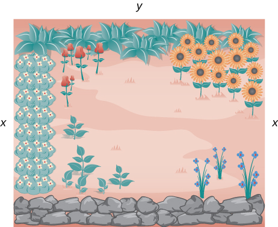
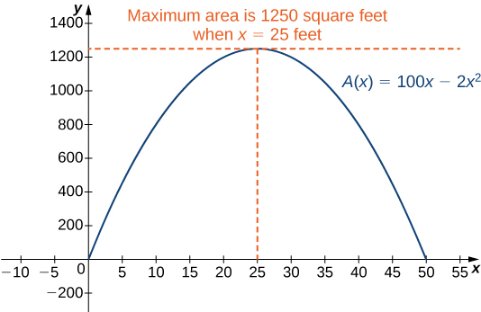

Example 4.7.1. Maximizing the Area of a Garden.
A rectangular garden is to be constructed using a rock wall as one side of the garden and wire fencing for the other three sides (Figure 4.7.2). Given \(100\) ft of wire fencing, determine the dimensions that would create a garden of maximum area. What is the maximum area?

Solution.
Let \(x\) denote the length of the side of the garden perpendicular to the rock wall and \(y\) denote the length of the side parallel to the rock wall. Then the area of the garden is
\begin{equation*}
A=x\cdot y.
\end{equation*}
We want to find the maximum possible area subject to the constraint that the total fencing is \(100 \text{ ft }.\) From Figure 4.7.2, the total amount of fencing used will be \(2x+y.\) Therefore, the constraint equation is
\begin{equation*}
2x+y=100.
\end{equation*}
\begin{equation*}
A(x)=x\cdot(100-2x)=100x-2x^2.
\end{equation*}
Before trying to maximize the area function \(A(x)=100x-2x^2,\) we need to determine the domain under consideration. To construct a rectangular garden, we certainly need the lengths of both sides to be positive. Therefore, we need \(x\gt 0\) and \(y\gt 0.\) Since \(y=100-2x,\) if \(y\gt 0,\) then \(x\lt 50.\) Therefore, we are trying to determine the maximum value of \(A(x)\) for \(x\) over the open interval \((0,50).\) We do not know that a function necessarily has a maximum value over an open interval. However, we do know that a continuous function has an absolute maximum (and absolute minimum) over a closed interval. Therefore, let’s consider the function \(A(x)=100x-2x^2\) over the closed interval \([0,50].\) If the maximum value occurs at an interior point, then we have found the value \(x\) in the open interval \((0,50)\) that maximizes the area of the garden. Therefore, we consider the following problem:
As mentioned earlier, since \(A\) is a continuous function on a closed, bounded interval, by the extreme value theorem, it has a maximum and a minimum. These extreme values occur either at endpoints or critical points. At the endpoints, \(A(x)=0.\) Since the area is positive for all \(x\) in the open interval \((0,50),\) the maximum must occur at a critical point. Differentiating the function \(A(x),\) we obtain
\begin{equation*}
A'(x)=100-4x.
\end{equation*}
Therefore, the only critical point is \(x=25\) (Figure 4.7.3). We conclude that the maximum area must occur when \(x=25.\) Then we have \(y=100-2x=100-2(25)=50.\) To maximize the area of the garden, let \(x=25\) ft and \(y=50 \text{ ft }.\) The area of this garden is \(1250\text{ft}^2\)
